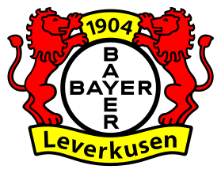
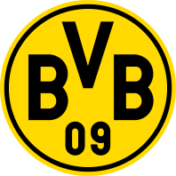
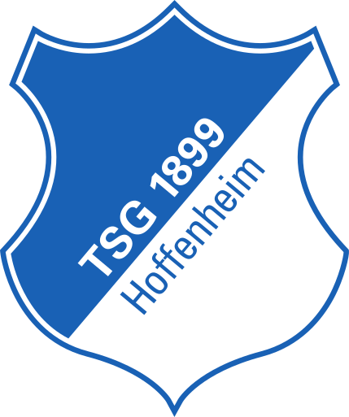
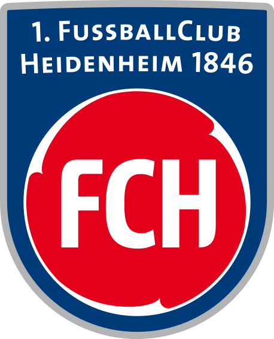

STANDINGS
STANDINGS — BUNDESLIGA 2025/26
| POS | Team | P | W | D | L | GD | PTS | Form |
|---|---|---|---|---|---|---|---|---|
| 1 |  Bayern Munich Bayern Munich |
34 | 25 | 6 | 3 | +61 | 81 | WDWWW |
| 2 |  Bayer Leverkusen |
34 | 22 | 7 | 5 | +41 | 73 | DLWWW |
| 3 | RB Leipzig |
34 | 20 | 8 | 6 | +34 | 68 | DLDDL |
| 4 |  Borussia Dortmund |
34 | 19 | 7 | 8 | +28 | 64 | LWLLW |
| 5 | VfB Stuttgart |
34 | 18 | 6 | 10 | +19 | 60 | LWDWL |
| 6 | Eintracht Frankfurt |
34 | 15 | 11 | 8 | +12 | 56 | WWDLD |
| 7 | SC Freiburg |
34 | 14 | 8 | 12 | +2 | 50 | DDLLW |
| 8 |  TSG Hoffenheim |
34 | 13 | 9 | 12 | -1 | 48 | LWDLD |
| 9 | Werder Bremen |
34 | 12 | 10 | 12 | +1 | 46 | DLDWD |
| 10 | Mönchengladbach |
34 | 11 | 10 | 13 | -4 | 43 | LWWDL |
| 11 |  FC Heidenheim |
34 | 10 | 12 | 12 | -5 | 42 | WDDLD |
| 12 | VfL Wolfsburg |
34 | 10 | 9 | 15 | -8 | 39 | LWLLL |
| 13 | FC Augsburg |
34 | 9 | 9 | 16 | -14 | 36 | DDDWL |
| 14 | Mainz 05 |
34 | 8 | 11 | 15 | -16 | 35 | WWDDD |
| 15 | Union Berlin |
34 | 7 | 11 | 16 | -19 | 32 | LLWLD |
| 16 | FC St. Pauli |
34 | 6 | 11 | 17 | -25 | 29 | LDDDD |
| 17 | VfL Bochum |
34 | 5 | 10 | 19 | -34 | 25 | WDLLL |
| 18 | Holstein Kiel |
34 | 4 | 8 | 22 | -43 | 20 | LLDDD |
UEFA Champions League qualification
UEFA Europa League qualification
UEFA Conference League qualification
Relegation to 2. Bundesliga